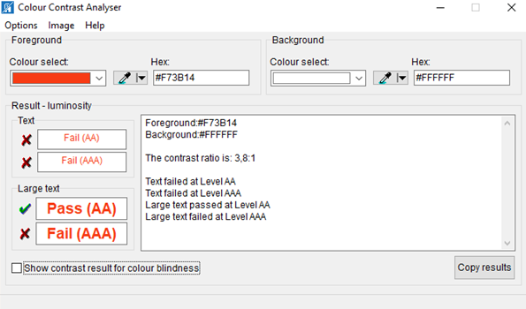

Check accessibility in PowerPoint slides
Automated tests #
Office Accessibility Verification Tool #
Start your tests with the Office Accessibility Verification Tool:
File > Info > Check for Issues > Check Accessibility

Important: if you encounter some difficulties, try to save your document from within PowerPoint 2010 in ".pptx" format. The option to "Maintain compatibility with previous versions of Word" has to remains unchecked.
Color contrasts #
Download Colour Contrast Analyser
Screen reader: JAWS & NVDA #
To complete the verification, you can test with a screen reader.
It helps you to simulate the configuration as the visually impaired and blind people.
For further information to navigate with JAWS & NVDA
Self-Assessment Grids #
These Grids are designed for self-assessment of the accessibility of Word and PowerPoint documents: